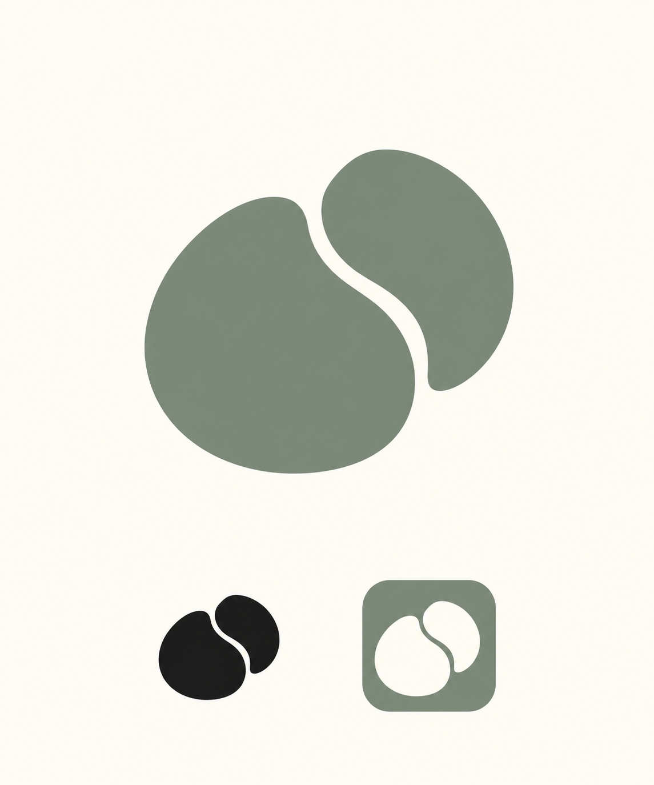

本轮重新设计的三个结构方向。种子为主，流转为隐性内核；静待萌发，日复一日滋养。以下为概念提案，未替换正式APP。
完整的待萌发种子，将短流转脉络收在内部，表达智慧本来就在里面。

两颗独立种子彼此贴合，流动空间由相互关系形成，表达独立生长、互相滋养。
两颗种子在基部真实相连，表达共享根系与共同成长，让共修进入图形结构。
内置 imagegen 生成。大图、单色与APP图标为视觉探索示意，仍需选定后统一几何与矢量定稿。